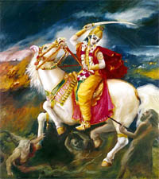

Hindu Prophecies: The Kalki Purana

and an uprising of lawlessness on all sides,
then I manifest Myself.
For the salvation of the righteous
and the destruction of such as do evil,
for the firm establishing of the Law,
I come to birth, age after age.
~ Bhagavad Gita, Book IV, Sutra 5, 7, 8
The famous quotation from the Bhagavad Gita, which is the holy book of the Hindus, is the basis of their belief that God (Lord Vishnu) takes birth on the earth as an Avatar or incarnation and as a saviour of the humanity in order to cleanse the world of evil and re-establish Dharma or Law when the human society reaches the nadir of moral and cultural values, and lose all awareness of what is right and wrong. The Hindu texts called Puranas tell the story of various Avatars of Vishnu, including his last avatar Buddha. The texts also prophesize of a future Avatar of Vishnu called Kalki who will appear at the end of the present age called the Age of Koli (untruth) or Koli Yug. Hindus believe that time revolves in a cyclical manner beginning with Satya Yug or the Age of Truth. Then comes Treta Yug, Dwapar Yug and finally Koli Yug. After that comes annihilation and re-initiation of the Satya Yug or Kritya Yug - the age of purity. Thus, the Hindus do not believe in the End of the World but in the cyclical nature of Time. The perspective of the Hindu religion is, thus, much wider than the Semitic religions and it automatically implies the fact that there were other human civilizations before the great flood, which is also mentioned in the Hindu texts.
The prophecies of the future Avtar Kalki has been mentioned in some of the Puranas, notably Vishnu Purana and Kalki Purana. These texts provide an amazing description of the signs of the Koli Age in which we are presently existing and the actions of Kalki in his endeavour of annihilating evil from the world. Much of the texts are full of religious and spiritual fervour and the names of the various persons mentioned there seem to be Hindu names and the names of places seem to be either places in India or in some cases unidentified places. We have to keep an open mind in this matter. All religions claim that the Messiah will come from their own religion and the names of persons and places mentioned are similar to their own. The truth is that the Messiah will not propagate any existing religion but will usher in the true path of spirituality, a sort of universal religion. It is possible that some of the names provided are close to the actual names of the concerned persons and places, inspite of being described in local terms.
The Signs of the Koli Age
"Those who are known as twice-born (Brahmins) are devoid of the Vedas, narrow-minded and always engaged in the service of the Sudras (low-born castes); they are fond of carnal desires, seller of religion, seller of the Vedas, untouchable and seller of juices; they sell meat, are cruel, engaged in sexual gratification and gratification of their appetite, attached to others' wives, drunk and producer of cross-breeds; have a low life-span, mix with lowly people and consider their brother-in-law as the only friend. They like constant confrontation and are fond of argument, discontent, fond of jewellery, hair and style. The wealthy are respected as high-born and Brahmins are respected only if they are lenders; Men are merciful only when they are unable to harm others; express displeasure towards the poor; talk excessively to express erudition and carry out religious work to be famous; Monks are attached to homes in this Koli Age and the homeless are devoid of any morality; Men of this age deride their teachers, display false religious affinity but tricks the good people; Sudras in Koli are always engaged in taking over others' possessions; in Koli, marriage takes place simply because the man and the woman agree to do so; Men engages in friendship with the crooked and show magnanimity while returning favours; Men are considered pious only if they are wealthy and treat only far-away waters (lands) as places of pilgrimage; Men are considered Brahmins simply because they have the sacred thread around their body and as explorers, simply because they have a stick in their hand; the Earth becomes infertile, rivers hit the banks, wives take pleasure in speaking like prostitutes and their minds are not attracted towards their husbands; Brahmins become greedy for others' food, the low-born castes are not averse to becoming priests, wives mix freely even after they become widows; the clouds release rain irregularly, the land becomes infertile, the kings kill their subjects, the people are burdened with taxes; they survive by eating honey, meat, fruits and roots; in the first quarter of the Koli Age, people deride God; in the second quarter, people do not even pronounce God's name; in the third quarter, men become cross-breeds; in the fourth quarter, men become the same (uniform) breed; nothing called race exists anymore; they forget God and pious works become extinct.
~ Kalki Purana, I[1], Verses 23-38
The appearance of Kalki
When the practices taught by the Vedas and the institutes
of law, shall nearly have ceased, and the close of the Koli age shall be nigh, a
portion of that Divine Being who exists of his own spiritual nature, in the
character of Brahma, and who is the Beginning and the End, and who comprehends
all things shall descend upon the earth. He will be born as Kalki in the family
of an eminent Brahmin, of Shambhala village, endowed with the eight
superhuman faculties. By his irresistible might, He will destroy all the
barbarians and thieves, and all whose minds are devoted to iniquity. He will
then re-establish righteousness upon earth; and the minds of those who live at
the end of the Koli age, shall be awakened, and shall be as pellucid as crystal.
The men who are thus changed by virtue of that peculiar time, shall be as the
seeds of human beings, and shall give birth to a race who shall follow the laws
of the Kritya Age, the Age of Purity.
~ Vishnu Purana 4.24
Kalki is said to born in a
village called Shambhala. Some interpret this as indicating a village of the
same name in the Indian state of Andhra Pradesh. I would not jump to that hasty
conclusion. The name may be allegorical. Buddhist scriptures also mention a
place of the same name, an invisible, hidden kingdom, which will be visible
during the end of the Kali Yug. Another interesting thing is the reference to
God as "who is the Beginning and the End". Compare this with
22.13 of the Revelations : I am the Alpha and the Omega,
the Beginning and the End. The two religions, separated by time and space
(Hinduism being much older than Christianity) are thought to have little in
common. But as you read through the next few paragraphs, you shall find some
amazing similarity of events mentioned in the Kalki Purana with those of the
Biblical Revelations.
Afterwards, Sumati, the wife of Vishnujasha became
pregnant.... Kalki descended to earth (as a human) in the month of Baisakha on
the 12th day after the full moon
~ Kalki
Purana, I[2], Verses 11 and 15
Kalki is born to
a man named Vishnujasha and a woman named Sumati in the Hindu month of Baisakha,
which starts from 14th or 15th April and lasts till 14th or 15th May. So, Kalki
will be born 12 days from the full moon day (after 14th/15th April), which can
be anytime between 26th April to 15th May.
I[2].
V.31 also says that he had three elder brothers. According to
I[2]
V.32, the King of the land where Kalki is born is named Vishakhjupa. As
per I[2]
V.4, the mission of Kalki's life is to destroy Koli - the equivalent of the
Anti-Christ (in whose name the present age is named). Koli signifies a person as
well as the vices which are peculiar to this age. As per
I[3], V.25 Kalki was given a white horse, which he rode during his
conquests all over the world. In fact Kalki is always symbolized as riding a
white horse. Compare this with the Revelations :
19:11 I saw the
heaven opened, and behold, a white horse, and he who sat on it is called
Faithful and True. In righteousness he judges and makes war.
The
marriage of Kalki
You shall go to Sinhala, marry your beloved Padma and
start your conjugal life.... You will then set out to conquer the world and
defeat the Kings allied to Koli, defeat the Buddhists and hand over the rule to
the pious kings named Devapi and Maru.
~ Kalki
Purana, I[3], Verses 9 & 10
The wife of Kalki is named
Padma who lives in Sinhala, which is commonly known as Sri Lanka. However, as I
mentioned before, this may be an allegorical reference to an island nation,
separate from his own country. In his endeavour to conquer the "Buddhists" and
other kings, he will be assisted by two kings allied to him, apart from the king
of the country in which he is born to and many other friends.
This island (Sinhala) is situated on the other side of the shore. The island has pure water and is full of people. Full of various types of Aircrafts and decorated with jewellery. The beauty of the island is enhanced by huge buildings and flags and gates decorated in front of them.
~ Kalki Purana, II[1], Verses 39, 40, 41
The interesting part of the description of the island where Kalki's wife-to-be stays is that apart from the huge buildings that the island city has, its sky is also full of Aircrafts! (called Vimana in Indian literature). We come to know from other sources that the name of the city where she stays is named Karumoti.
He (the father of the bride) gave away Padma for marriage to Kalki as per the traditions. The "King of the World", Kalki after having his wife and having been well received by the gentlemen of the island, expressed his desire to stay in the island of Sinhala for a while in order to see the island.
~ Kalki Purana, II[3], Verses 15, 16
Padma is fair and Kalki is dark, both are opposites to each other...
~ Kalki Purana, II[3], Verse 19
Kalki, the annihilator of Koli forgot his mission and stayed there happily in that home (in Shambhala) for many years...Padma gave birth to two sons named Joy and Vijoy who were powerful and famous.
~ Kalki Purana, II[6], Verses 32 and 36
Kalki's war with China (or maybe, North Korea)
The great conqueror, Kalki then paid homage to his father and started for conquering Kikatpur with his army. The Buddhists live in that city. The residents of that city do not worship God or their forefathers. They do not fear after-life. Other than the body, they do not believe in any soul. They do not have any pride in their lineage or in their race; money, marriage etc. are insignificant to them. People of that place eat and drink a variety of things. When Jin (the leader) heard that Kalki has come to fight them, he gathered a huge army and went out of the city to fight Him.
~ Kalki Purana, II[6], Verses 40 to 44
Although the city of Kikatpur is unidentified, yet it is specified that "Buddhists" live there. But the descriptions of the belief of those people are anything but Buddhist and are more in consonance with the ideology of the Communists, i.e. people who do not worship God, do not believe in after-life, soul, race and the significance of wealth and give the collective more importance than the individual. The choice of foods of the Chinese (or Koreans) are also considered exotic in other parts of the world. Interestingly, the name of the leader is also mentioned as "Jin". As we all know, Jin, Xin or Xian are very common names among the Chinese. On 15th March 2003 the Chinese Communist Party elected Hu Jintao as the new President of China. By religion, China (or Korea) is predominantly Buddhist, although no religion is allowed to be openly practiced under the Communist rule. Thus the description of the belief of the people and their religion are not contradictory but very appropriate.
He (Jin) took up various types of arms and started war with Kalki. Even the Gods were surprised by the techniques of war adopted by Jin. Jin injured Kalki's horse with a javelin and made him disoriented and unconscious and attempted to take him away, but could not lift him...On seeing that, King Vishakhjupa got angry and encountered Jin and picked up unconscious Kalki in his own chariot. Kalki regained his consciousness in a while and encouraged his soldiers; following that, he rushed towards Jin after getting down from the chariot of Vishakhjupa.
~ Kalki Purana, II[7], Verses 5, 6, 8, 9
It seems that Jin was not a mean enemy and Kalki did not have a smooth ride either and had his moments of ups and downs. Of course this is what is expected if a western force confronts the mighty Chinese army, the biggest in the world in terms of numbers.
Soon, Garga (associate of Kalki) and his army killed 6000 Buddhist soldiers. Bharga and his soldiers killed and injured 11 million enemy soldiers and his mighty allies killed 2500 of them. Kobi along with his sons killed 2 million enemy soldiers, Pragya killed 1 million and Sumantu killed 5 million soldiers.
~ Kalki Purana, II[7], Verses 5, 6, 8, 9
It seems that Kalki and his allies kill or injure an army which is almost 20 million strong. An army of this huge proportions can only be assembled by a country like China and its allies. Thus, the attack on the city of Kikatpur does not merely represent an attack on a city but on a country, probably in alliance with others.
Soon Kalki smiled and said unto Jin - O Sinner ! Don't flee but come and face me...Soon your body will be pierced with my arrows. Soon you shall depart from this world. Then, no one will go along with you. So, you and your allies surrender before me. On hearing the words of Kalki, mighty Jin said "The fate can never be seen. I am a materialist, Buddhist. Nothing but the perceptible are accepted by us. The unseen and the imperceptible are banished by us. Hence your effort is fruitless. Even if you are Godly, I am before you; see if you manage to kill me. In that event, will the Buddhists forgive you?
~ Kalki Purana, II[7], Verses 15 to 18
Once again, the
ideology of Jin is apparent from his own words. This is contrary to what
the Buddhists profess - Buddhists believe in fate, soul and rebirth like the
Hindus. But this "Buddhist" does not believe in fate or the imperceptible and
this ideology is not the ideology of any religion, but that of Communism. But
for communism, China would have been the world's largest Buddhist country and
its people, at least in private, still follow the religion. Verse 26 describes
the death of Jin in the hands of Kalki. The next few verses describe the battle
between Suddhodhan, the brother of Jin and the forces of Kalki, in which
the former manage to inflict some heavy damages on the forces of Kalki, using,
among other things an weapon if illusion (Maya). Ultimately Kalki managed
to defeat the Buddhist forces who either died, lay injured or fled the
battlefield.
But it was not the end of the war yet. On the verge of the defeat of the
"Buddhist" army, their womenfolk gathered to battle Kalki and his allies. This
is quite unprecedented in the annals of Hindu epics or for that matter, history
and stories from anywhere in the world.
The wives of the Buddhists, gathered for battle riding on chariots, birds, horses, camels and bulls to defend their husbands. These beautiful, powerful young ladies devoted to their husbands did not seek the shelter of their children. These glorious women, dressed in battle-gear and various jewellery came to the battlefield armed with swords, power-weapons, arrows and javelins. In their hands were heavenly rings. These beautiful women consisted of hair dressers, women devoted to husbands (house-wives) and even prostitutes. These women, troubled by the death of their husbands and fathers came forth to fight the army of Kalki. People even care to protect objects like soil, ashes, wood etc. Therefore, how can these women tolerate the death of their husbands in their presence? The womenfolk of the Buddhists, seeing their husbands injured and troubled came in front of them and started to fight the soldiers of Kalki. Seeing the women take to battle, the soldiers of Kalki were amazed and came to Kalki to inform him about the whole matter in details. Hearing this, Kalki, clever as he is, arrived there on a chariot accompanied by his allies and army with a cheerful mind. Seeing the women astride in various types of vehicles, standing in formations, Kalki started saying "Ladies, please hear what I have to say. It is against the principles for men to fight against women..."
~ Kalki Purana, III[1], Verses 11 to 20
We can guess that Kalki indulged in intense diplomacy to dissuade the women from fighting. Kalki Purana describes in the next few verses the words of Kalki which can be called the unashamed flattery of the women by Kalki. Though not quite relevant, it will show that the Kalki Purana is not simply a text of war and conquest and gloom and doom that we associate these times with. Rather, it shows the human and the spiritual aspects of the whole war.
...On your beautiful moon-like face, falls the locks of fine hair. Everyone's mind become cheerful on seeing this. Which man can hit on such a face? On these beautiful faces are a pair of eyes like lotus with long eyelashes and dark pupil. Which man can hit such a face? Your breasts are decorated like the necklace of Shiva. Even the pride of the cupid gets hurt on seeing this. Which man can hit on such a place? Which man can hit the spotless face of a woman on which play the locks of fine hairs from the head? Which man can hit your slim waists weighed down by breasts and decorated by very fine body-hair? Can any man shoot an arrow in your eye-soothing and feminine pubic area covered by fine hair and untouched by sin? Hearing these words of Kalki, the infidel-women smiled and said - "Sir ! When our husbands died in your hand, we too have died". Saying this, the women prepared to kill Kalki.
~ Kalki Purana, III[1], Verses 21 to 27
All such attempts of eulogizing femininity by Kalki cut no ice with the women. At this point of time however, a miracle happened which persuaded the women from fighting Kalki :
...However the weapons remained in their hands. The various weapons metamorphosed and stood before the infidel-women decorated in gold and said "Ladies! Do ye know Kalki as the Supreme God, empowered by whom we take the lives of living beings. Have confidence in our words. On His command we propagate and on his glory we have attained various forms and by His mercy we have become renowned. By His empowerment does the five elements carry out their own actions. He is the Supreme Being Himself. Under His wishes has the nature created the whole Universe. The creation and the continuity of the creation is nothing but His action. He is the Beginning and the End, from Him arise all the holy things in the world. It is He, who is our husband, our wife, son, friend and relative. From Him comes forth all these illusion-like happenings. Those who know that life and death are nothing but coming and going under the influence of love, affection and fondness, those who are devoid of any feelings of anger and hate, who are the devotees of Kalki, they know the above illusion-like happenings as false. How was Time created? Where does death come from? Who is Yama (Death incarnate and lord of the underworld)? Who are the Gods? By His illusion, it is Kalki who has become many. O Ladies! We are not weapons and no one gets hurt by us. He is the weapon and it is he who hits. These distinctions are nothing but the illusion (Maya) created by the Supreme Being. ...We cannot hit the devotees of Kalki. Hearing the words of the weapons, the women were surprised. They shed their illusion of attachment and came to seek Kalki.
~ Kalki Purana, III[1], Verses 27 to 39
Whether it was a miracle or diplomacy, the end result was that the Buddhist women did not fight Kalki's army, thus averting what could have been the only war between a male and a female army. After the war and victory, Kalki returned from Kikatpur with his army.
Nostradamus apparently refers to the fall of China allegorically as well, by referring to the fall of the Great Wall of China -
II.57 Before the conflict the Great Wall will fall, the great one to death, death too sudden and lamented, born imperfect: the greater part will swim: Near the river the land stained with blood.
Since Kalki Purana refers to the exploits of Kalki only, the details of Chinese advances before the war is not clear. By the own admission of Nostradamus, his prophecies too mostly describe the events in and around Europe. A few other prophecies, however, indicate that China will conquer much of Asia before facing the western alliance. Here are a few such prophecies :
"The events taking place in Europe are a deception. Russia
will be the scourge for all nations, because it was not converted. Russia
attacks the West, and China invades in Asia."
- Lucia, the last living seer from Fatima, April 7,
1990
Along with the Chinese incursion in Asia, there will also be a Russian invasion in the Europe. Thus, this world war will not simply be the result of an Arab invasion but an invasion by the alliance of Russia, China and Islamic nations. There are a large number of prophecies about the Russian invasion of Europe and attacks on the USA.
The prophecies made by Anton Johansson, Sweden, (1858 - 1909) also specifically mention Chinese attack on India. Johansson successfully predicted the sinking of the Titanic and named one of its victims, millionaire John Jacob Astor VI, foresaw the events of World War I, accurately predicted San Francisco's earthquake of 1906 and a volcanic eruption in 1902 that demolished the city of St. Pierre, Martinique. He said the Third World War would break out at "the end of July, beginning of August." adding, "I do not know the year." (the "Calamitous War" under Cancer mentioned by Nostradamus) -
-
India will be
occupied by China.
- New diseases used as weapons will cause 25 million people to die.
- Persia and Turkey will be conquered apparently by Russian troops.
- Revolutionaries will instigate unrest and war in India and Egypt to
facilitate
the occupation of India and Europe.
- The Russians will conquer the Balkans.
- There will be great destruction in Italy.
- The "red storm" will approach France through Hungary, Austria, northern
Italy and Switzerland. France will be conquered from inside and outside.
- American supply depots will fall into Russian hands.
- Germany will be attacked from the east.
- There will be a civil war, Germans will fight against Germans.
- The Eastern Bloc will cause a civil war in England.
- Russia will lead a mass attack against the United States, so U.S. forces will
be prevented from reinforcing Europe.
- New weapons will cause huge hurricanes and firestorms in the USA where
the largest cities will be destroyed.
Kalki's war with Koli (The Antichrist) and Gog & Magog
[Dharma (Righteousness or Law) said to Kalki] "Right now, infidels like Saka, Kamboja, Sabara etc. are under the control of Koli and that mighty Koli has defeated me taking advantage of the influence of the time. The pious men are being tortured and consigned to the flames. That's why I have come for your protection.
~ Kalki Purana, III[6], Verse 22
Thus, Kalki, surrounded by his allies set out for the desired place for conquering the infidels like Khasha, Kamboja, Sabara, Barbarians etc. ... The people who lived there carry out the orders of women. Hearing that Kalki has come for battle, the angry Koli, along with his allies, sons and grandsons came riding on a chariot out of the city of Bishasan. On seeing Koli, Kalki ordered his followers to engage in battle with him.
~ Kalki Purana, III[6], Verses 32, 33, 35, 36
Revelations 19:19 I saw the beast, and the kings of the earth, and their armies, gathered together to make war against him who sat on the horse, and against his army.
Lord Kalki, along with his soldiers armed with various types of weapons engaged in war with Kok and Bikok. These two brothers are supreme demons, great fanatics and adept in the art of war. These brothers are intimately connected, powerful, hard to defeat and are even feared by the Gods.
~ Kalki Purana, III[6], Verses 43 & 44
The surprise elements here are the description of the war with brothers called "Kok and Bikok", who are allied with Koli. These are surely Gog and Magog described in the Biblical book of Revelations and "Yajooj and Majooj" described in the Islamic prophecies.
Soon they entered the city of Bishasan, the capital of Koli, and burnt down the city using fiery missile. Alongwith the city, Koli too was burnt and his sons and relatives were destroyed.
~ Kalki Purana, III[7], Verses 9 & 10
The army of Kalki
entered the capital city of Koli called Bishasan (Babylon?) and burnt
down the whole city along with Koli himself and its citizens. Similarly, the
allies of Kalki used various types of weapons and defeated the countries and
their kings allied with Koli. Compare this with the
Revelations :
19:20 The beast was taken,
and with him the false prophet who worked the signs in his sight, with which he
deceived those who had received the mark of the beast and those who worshiped
his image. These two were thrown alive into the lake of fire that burns with
sulfur.
The verses 14 to 34 of III[7] describe the terrible fight of Kalki with "Kok and Bikok" (Gog and Magog). At one point of time, the "brothers" managed to defeat Kalki in a battle and injure him. However, later the allies used a certain kind of weapon to defeat Bikok. But soon he was resurrected with the help of Kok. This went on for quite sometime before both were killed at the same time.
Revelations 20:8 and he (Satan) will come out to deceive the nations which are in the four corners of the earth, Gog and Magog, to gather them together to the war; the number of whom is as the sand of the sea.
The war against Vallat and the marriage treaty
Thus, after attaining victory, Kalki started for the city of Vallat ruled by the Sashyakarns along with his soldiers and allies. III[7], 35. His (the King of Vallat) name is Sashidhwaj. He is intelligent, handsome, tall, brave and has a huge military. III[8], 3. King Sashidhwaj arrived at the battlefield and dispersed the powerful soldiers of Kalki. III[8], 18. ...Thus, King Sashidhwaj managed to defeat Kalki, capture him and some of his allies and went back to his palace. III[8], 18.
The battle of Vallat is the most terrible battle fought by Kalki so far. In this battle, Kalki was defeated and captured in the war and taken prisoner by the King Sashidhwaj of Vallat. However, it is mentioned that the King was aware of the divine nature of Kalki and it has been said that even after capturing him, the king showed him utmost respect and entered in a peace treaty with him, offering his own daughter Roma for marriage with Kalki.
Next, King Sashidhwaj recalled his sons from the battlefield and gave away his daughter Roma for marriage with Kalki in accordance with the wishes of his wife, Sushanta. All the allies of Kalki were invited to Vallat from the battlefield (for the marriage).
~ Kalki Purana, III[10], Verses 25 & 26
Thus, the wars of Kalki came to an end with a defeat and a peace treaty that ended the WW-III. III[14] describes that after the war, Kalki handed over various portions of his liberated lands to various kings who were his allies and Satya Yuga (Age of Truth) was established on the Earth. Kalki himself stayed in Shambhala with his two wives, Padma and Roma. Finaly, III[19] describes the death of Kalki and his ascension to the heaven.
VIII.54 of Nostradamus also describes a marriage treaty by Chiren Selin, the equivalent of Kalki -
Under the colour of the marriage treaty, a magnanimous act by the 'Chyren Selin' : St. Quintin and Arras recovered on the journey; By the Spanish a second butcher's bench is made. - VIII.54
Even though Kalki is considered as the God incarnate, his human qualities have been highlighted all through the text. He had his share of losses in battles and ups and downs, which are consistent with any war in the modern times where the warring forces are equally matched and possess weapons of mass destruction. Chyren, described by Nostradamus seems to have lost in some battles too :
The great man led captive from a foreign land, chained in gold, offered to King CHYREN : He who in Ausonia, Milan, will lose the war and all his army put to fire and sword. Nostradamus, IV.34
But the fact that Kalki is a good strategist and an excellent negotiator is quite apparent from the texts as well as the fact that he has some qualities which make him the undisputed leader of the allied forces even though he is initially not even the "King" of his own country. At the most, he is a high ranking Army officer with some very exceptional qualities, whose stature only grows as events unfold, such that he is unanimously accepted as the "King of the World" and as a Messiah by all religions.
In all, the Hindu text of Kalki Purana comprises of 6100 verses describing the birth, marriage, battles and the death of Kalki, who is considered the last Avtar or incarnation of Vishnu or the Supreme Being, who will establish the Age of Truth or Age of Purity on Earth. The text is essentially a spiritual text, although the verses described here are primarily concerned with the wars and various events in the life of Kalki. As agreed by all the religious prophecies, the Awaited One will not be a man of peace like Jesus Christ or Buddha, but a man of war who will destroy evil and establish righteousness on the earth.
Another
little known Hindu book named Divya Maha Kala Jnana, literally
meaning "Divine Knowledge of the Time" written by Shree Veera Brahmendra Maha
Swami, who lived in the modern Andhra Pradesh state of India, about 1000 years
ago, had elaborated on the events preceding the appearance of Kalki or "Sree
Veera Bhoga Vasantharaya" as he termed him.
Some of the descriptions of the events are amazingly similar to those
described in the western religious texts or by prophets like Nostradamus and
others. The Hindu Lunar Years are counted and named on the basis of 60 year
cycles. If we assume that the events will take place in the current 60 year
cycle (without any particular reason for that assumption, of course - see
Note below), the corresponding years have been mentioned alongside in
brackets. The current cycle began on 30th March, 1987 and will end on April,
2047. The year-wise chart of Hindu years of the current cycle vis-à-vis the
general calendar that we use are given as a note after the prophecies.
- At the time of His (Sree Veera or Kalki's) arrival, Krita Yuga Dharma (religion of the age of peace) will have been established with the Moon, Sun, Venus and Jupiter having entered the same sign. This is not a very rare combination though. This will next occur around 22nd May 2012, when Moon, Sun, Venus and Jupiter will be in Taurus. Their positional details as seen from Shree Veera Brahmendra Maha Swami's native state of Andhra Pradesh, India, are as follows :
Location: India, Hyderabad (State capital of Andhra Pradesh)
Coordinates 078° 28' 00" E 17° 23' 00" N
Local time 22/05/2012 12:02:05
Universal time 22/05/2012 06:32:05
|
Moon Data Right ascension 04h 58m 47s Declination +21° 44' 46" Azimuth 72° 36' 16" Altitude +72° 34' 46" Longitude 75° 32' 16" Latitude -00° 57' 59" Rises 22/05/2012 06:34 Transits 22/05/2012 13:15 Sets 22/05/2012 19:57 Constellation Latin name Taurus English name Bull |
Sun Data Right ascension 03h 57m 51s Declination +20° 28' 28" Azimuth 38° 59' 33" Altitude +86° 00' 00" Longitude 61° 34' 36" Latitude +00° 00' 00" Rises 22/05/2012 05:42 Transits 22/05/2012 12:13 Sets 22/05/2012 18:44 Constellation Latin name Taurus English name Bull |
|
Venus Data Right ascension 05h 29m 16s Declination +26° 26' 35" Azimuth 64° 33' 49" Altitude +64° 42' 03" Longitude 83° 06' 43" Latitude +03° 11' 21" Rises 22/05/2012 07:07 Transits 22/05/2012 13:44 Sets 22/05/2012 20:21 Constellation Latin name Taurus English name Bull |
Jupiter Data Right ascension 03h 32m 23s Declination +18° 18' 25" Azimuth 285° 19' 40" Altitude +86° 22' 40" Longitude 55° 14' 28" Latitude -00° 47' 18" Rises 22/05/2012 05:22 Transits 22/05/2012 11:47 Sets 22/05/2012 18:13 Constellation Latin name Taurus English name Bull |
-The rule of Sree Veera Dharma starts on a full moon day in the month of October during the year Chitra Bhanu (2002-2003).
- He will be born before the eighth day of full moon of the month of Margasheera (June 7-21). His devotees will be looking forward to his glory and his arrival during the month of Karteeka (May 10-25). In the year of Partheeva (2005-2006), all the people will be able to see Sree Veera Bhoga Vasantaraya, and everyone will meditate on the Great Spirit. Sree Veera Bhoga Vasantharaya will be crowned during the year of Khara (2011-2012). That means, even though his "rule" started before, people would come to know him as the saviour after 3-4 years. Evidently, his "crowning" comes after his "rule" starts. This probably indicates his ascension from an ordinary ruler to a "Great Monarch". This is probably when his "Krita Yuga Dharma" starts from, as described in the astronomical location mentioned before.
- He will be crowned three years after exotic horses drink the water of Tungabhadra river . [Tugabhadra river is in the South Indian state of Andhra Pradesh. If "exotic horses" mean something like tanks, it might indicate war in India in (2008-2009), three years before he is crowned.]
- There will be rain of blood in towns, villages, and forests. Poor quality coins will be used as currencies. In some places, there will be a rain of fire. Kings of all kinds will be destroyed, and His strength will reign supreme. Terrible wars will be fought, and no one will be able to mourn for the dead. [The description of "rain of blood" and "rain of fire" and wars are similar to the descriptions in the prophecies of Nostradamus and other prophecies. One quatrain of Nostradamus even mentioned the "poor quality" coins - made of leather !
Through long war all the army exhausted,
so that they do not find money for the soldiers;
instead of gold or silver, they will come to coin leather,
Gallic brass, and the crescent sign of the Moon.
~ Nostradamus VII.25 ]
- People will be unable to rely on each other. Many incurable diseases will be
present. A man will have ten women after him, which will result in extreme
behaviour in human beings. [This is
a consistent refrain in many prophecies that during the war so many men will die
that women will far outnumber men afterwards]
- All the Grahas (planets) will deviate from their paths. Non-believers will
disappear. An invisible drought will occur. There will be terrible rains
throughout the world. [A change in
the axis of the earth as well as of the climate is indicated]
- A
Star with three tails will be born in the east, due to which many villages will
be reduced to ashes. [The
"star with three tails" is the comet with three tails. Burning pieces falling
from the comet will destroy cities, villages and forests]
- He will rule over the
Universe for a period of 108 years, and return to heaven. Preceding that, the
world will be full of calamities and situations will be changing every instant.
- When Saturn enters Pisces
(2025 as per our assumption
but may also pertain to a much later period),
Mlechchas [non-believers: also
became synonymous with Muslims from the Hindu perspective during the Islamic
Rule] will be
destroyed.
- When Saturn enters Aries
(2028 as per our assumption
but may also pertain to a much later period),
a little peace will be established.
[this may be the description of a short peace during WW-III following a peace
treaty between the warring sides, which will quickly be broken]
- When Saturn enters Taurus in June
(2030 as per our assumption
but may also pertain to a much later period),
poisonous air will blow from the north-east, and extreme people will go to Yama
Loka (abode of death). [perhaps a
description of a chemical or biological warfare which will kill many people.
China is in the North and North-East of India]
- When Saturn enters Gemini
(2033 as per our assumption
but may also pertain to a much later period),
this will usher in an era of peace.
- By the year of Ananda-Raksha
(2034-2036 as per our
assumption but may also pertain to a much later period),
all Koli Dharmas (dark actions or religions) will be destroyed. By the year
Ananda (happiness -
2034-2035 as per our assumption but may also pertain to a much later period),
all the countries will attain peace and happiness. The word of his glory will
spread in the world. Before the year of Ananda, rice will be sold for low price.
Then, all the countries will become prosperous.
Note:
My assumption that all the above events
will take place in the current cycle is perhaps not correct. As elsewhere, we
have to distinguish between the WW-III and the War of the Armageddon, and the
later would probably take place a few hundreds of years after WW-III, when the
so-called 1000 years of Golden Age will commence. So, the events interpreted
above as taking place 2025 onwards perhaps pertain to a later century, before
the "End of the World". As I have concluded elsewhere, "Chiren", who could be
the same as "Sree Veera" mentioned here, will initiate an era of peace after
WW-III but gradually the world will again descend into anarchy resulting in the
"Doomsday" a few centuries later.
The year-wise chart of Hindu years of the current 60-year cycle vis-à-vis the
Gregorian calendar are given below for interpretation of the above prophecies.
The cycle again starts in 2047-48 from the year "Prabhava".
| Years | Name | Years | Name | Years | Name |
| 1987-88 | Prabhava | 1997-98 | Eswara | 2007-08 | Sarwajitu |
| 1988-89 | Vibhava | 1998-99 | Bahudhanya | 2008-09 | Sarwadhari |
| 1989-90 | Shukla | 1999-00 | Pramadi | 2009-10 | Virodhi |
| 1990-91 | Pramoduta | 2000-01 | Vikrama | 2010-11 | Vikriti |
| 1991-92 | Prajotpatti | 2001-02 | Vishu | 2011-12 | Khara |
| 1992-93 | Angirasa | 2002-03 | Chitrabhanu | 2012-13 | Nandana |
| 1993-94 | Srimukha | 2003-04 | Swabhanu | 2013-14 | Vijaya |
| 1994-95 | Bhava | 2004-05 | Tarana | 2014-15 | Jaya |
| 1995-96 | Yuva | 2005-06 | Parthiva | 2015-16 | Manmatha |
| 1996-97 | Dhatu | 2006-07 | Vyaya | 2016-17 | Durmukhi |
| Years |
Name |
Years |
Name |
Years |
Name |
| 2017-18 | Hevilambi | 2027-28 | Plavanga | 2037-38 | Pingala |
| 2018-19 | Vilambi | 2028-29 | Kilaka | 2038-39 | Kalayukti |
| 2019-20 | Vikari | 2029-30 | Soumya | 2039-40 | Siddharthi |
| 2020-21 | Sarvari | 2030-31 | Sadharana | 2040-41 | Roudri |
| 2021-22 | Plava | 2031-32 | Virodhikruti | 2041-42 | Durmathi |
| 2022-23 | Subhakritu | 2032-33 | Paridhavi | 2042-43 | Dunhubhi |
| 2023-24 | Sobhakritu | 2033-34 | Pramadicha | 2043-44 | Rudhirodgari |
| 2024-25 | Krodhi | 2034-35 | Ananda | 2044-45 | Rakthakshi |
| 2025-26 | Viswavasu | 2035-36 | Raksha | 2045-46 | Krodhana |
| 2026-27 | Parabhava | 2036-37 | Nala | 2046-47 | Akshaya |
Source: http://www.angelfire.com/psy/nostradamus/hindu.htm